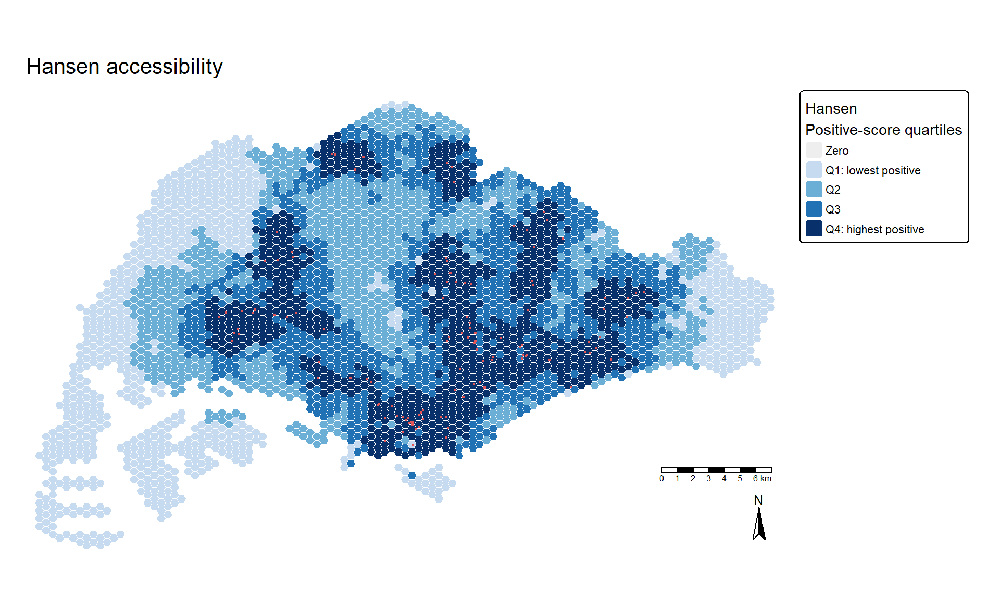
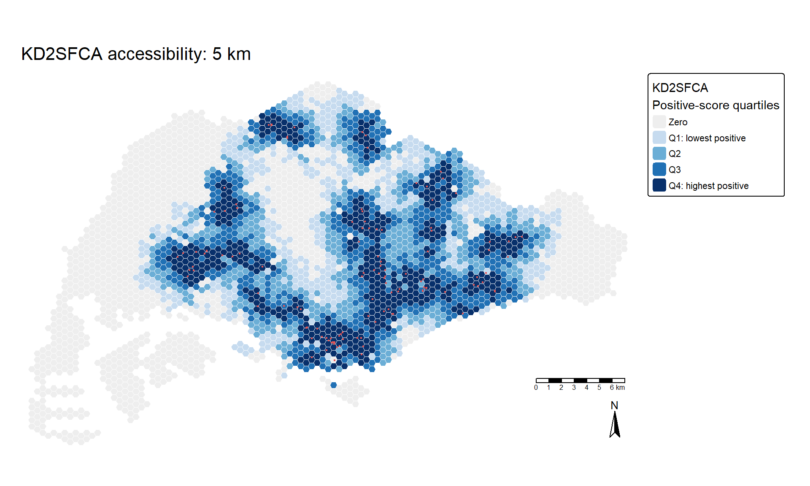
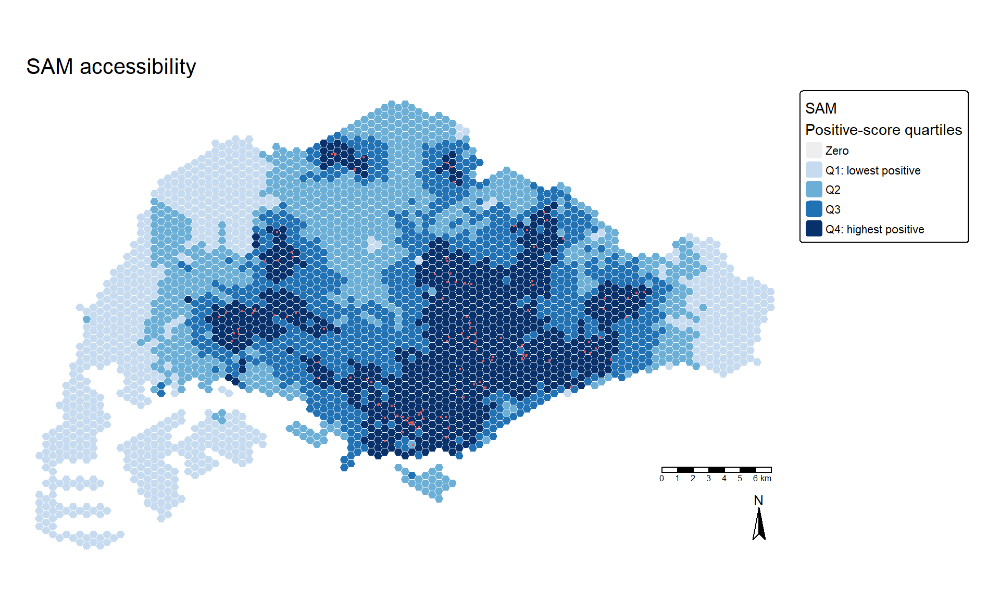
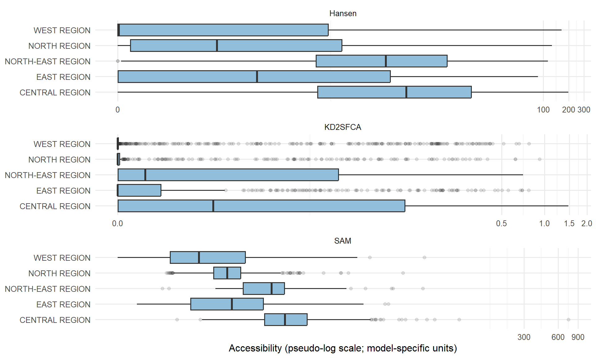

Show code
library(sf)
library(dplyr)
library(tidyr)
library(readr)
library(ggplot2)
library(tmap)
library(SpatialAcc)
library(knitr)
tmap_mode("plot")
theme_set(theme_minimal(base_size = 12))JUNCHEN LI
October 15, 2026
October 15, 2026
How does the definition of accessibility change the apparent geography of service provision? This exercise accompanies Chapter 17 and compares three accessibility models for eldercare in Singapore. It is a learning exercise, not an assessment of current service adequacy.
The inputs are historical teaching data: Master Plan 2014 subzones, a prepared hexagonal grid, eldercare locations, and an origin–destination network-cost table. Demand and capacity are both assigned the illustrative value 100. No observed elderly population or actual facility capacity is available in these inputs.
Start with the chapter’s data section, which distinguishes public source data from prepared teaching inputs.
| Input | Source and acquisition route | Local location |
|---|---|---|
MP14_SUBZONE_NO_SEA_PL |
URA Master Plan 2014 subzones, attributed to data.gov.sg in the chapter. Obtain the 2014 version, not a newer Master Plan. | data/geospatial/ |
ELDERCARE |
Follow the chapter’s Eldercare Services link. The portal currently offers GeoJSON; the exercise uses a prepared shapefile. | data/geospatial/ |
hexagons |
Instructor-prepared grid supplied in the downloaded course package Hands-on Exercise 7.zip. |
data/geospatial/ |
OD_Matrix.csv |
Instructor-prepared network costs supplied with the grid and facilities in Hands-on Exercise 7.zip. |
data/aspatial/ |
The chapter does not provide a direct download for the prepared grid or OD matrix. A newly downloaded facility layer must not be substituted without checking its coordinates and ID correspondence against the matrix. Generating a new grid would also require a matching network-distance calculation; Euclidean distances are not an equivalent replacement.
Course-package installation: use Hands-on Exercise 7.zip from the local Downloads folder and extract its data folder into this exercise folder. The current analysis inputs have been installed from that package. The boundary, grid and facility files match the previous inputs byte for byte; the OD matrix has the same text after normalising line endings. Thus, this source change does not change the analytical values. The package’s .qmd GIS metadata sidecars are not Quarto exercise documents and are not included in the website source tree.
Current-file provenance: data/course-package-manifest.txt identifies the installed course archive and OD checksum. The earlier repository retrieval script and manifest remain as historical records only; they do not describe the current OD file checksum and are not the recommended acquisition route. The public links above identify the upstream sources, not a claim that these prepared files were freshly obtained from those portals. Prepared teaching data have reuse restrictions; consult the instructor before other-course use or redistribution.
Install the listed packages before rendering; this document does not install software automatically.
All distance calculations must use consistent units. Transform the supplied layers to Singapore’s projected CRS (EPSG:3414). The subzone file has a readable SVY21 definition even though its EPSG identifier is absent; transformation uses that definition rather than guessing from the coordinates.
read_layer <- function(name) {
st_read(paste0("data/geospatial/", name, ".shp"), quiet = TRUE) |>
st_transform(3414) |> st_make_valid()
}
mpsz <- read_layer("MP14_SUBZONE_NO_SEA_PL")
hexagons <- read_layer("hexagons") |> select(fid) |>
mutate(demand = 100) |> arrange(fid)
eldercare <- read_layer("ELDERCARE") |> select(fid, ADDRESSPOS) |>
mutate(capacity = 100) |> arrange(fid)
stopifnot(!anyDuplicated(hexagons$fid), !anyDuplicated(eldercare$fid),
!any(st_is_empty(hexagons)), !any(st_is_empty(eldercare)))
kable(data.frame(Layer = c("Subzones", "Demand hexagons", "Facilities"),
Features = c(nrow(mpsz), nrow(hexagons), nrow(eldercare))))| Layer | Features |
|---|---|
| Subzones | 323 |
| Demand hexagons | 3125 |
| Facilities | 120 |
The OD table records access-to-road, network and destination-access costs in metres. Convert total cost to kilometres only after checking completeness. Matrix row order must match demand IDs, and column order must match facility IDs; a plausible-looking map can otherwise contain misassigned scores.
od <- read_csv("data/aspatial/OD_Matrix.csv", show_col_types = FALSE)
stopifnot(nrow(od) == nrow(hexagons) * nrow(eldercare),
!anyDuplicated(od[c("origin_id", "destination_id")]),
setequal(od$origin_id, hexagons$fid),
setequal(od$destination_id, eldercare$fid),
all(is.finite(od$total_cost)), all(od$total_cost > 0))
cost_error <- max(abs(od$total_cost - od$entry_cost -
od$network_cost - od$exit_cost))
stopifnot(cost_error < 0.1)
wide <- od |> select(origin_id, destination_id, total_cost) |>
pivot_wider(names_from = destination_id, values_from = total_cost)
wide <- wide[match(hexagons$fid, wide$origin_id), ]
D <- as.matrix(wide[, as.character(eldercare$fid)]) / 1000
rownames(D) <- as.character(hexagons$fid)
stopifnot(identical(dim(D), c(nrow(hexagons), nrow(eldercare))),
all(is.finite(D)), all(D > 0))
kable(data.frame(OD_pairs = nrow(od), Minimum_km = min(D),
Median_km = median(D), Maximum_km = max(D)), digits = 3)| OD_pairs | Minimum_km | Median_km | Maximum_km |
|---|---|---|---|
| 375000 | 0.037 | 17.304 | 56.351 |
The following equations describe the installed SpatialAcc implementation used here, with demand \(p_i\), capacity \(n_j\), and network cost \(d_{ij}\) in kilometres:
d0; passing 5 would not create a 5 km cutoff. This score divides by local demand, not competing demand across all origins.These are different indices, not interchangeable quantities. Their numerical magnitudes should not be directly compared as if they had the same units.
p <- hexagons$demand
n <- eldercare$capacity
H <- SpatialAcc::ac(p, n, D, power = 2, family = "Hansen")
K <- SpatialAcc::ac(p, n, D, d0 = 5, power = 2, family = "KD2SFCA")
S <- SpatialAcc::ac(p, n, D, power = 2, family = "SAM")
# Independent checks of the implemented formulas and matrix orientation.
H_check <- as.vector(exp(-2 * D) %*% n)
W <- exp(-D^2) * (D <= 5)
denominator <- colSums(W * p)
R <- ifelse(denominator > 0, n / denominator, 0)
K_check <- as.vector(W %*% R)
S_check <- as.vector((D^-2) %*% n) / p
stopifnot(isTRUE(all.equal(as.numeric(H), H_check)),
isTRUE(all.equal(as.numeric(K), K_check)),
isTRUE(all.equal(as.numeric(S), S_check)),
all(is.finite(c(H, K, S))))
scores <- tibble(fid = hexagons$fid, Hansen = H, KD2SFCA = K, SAM = S)
access <- left_join(hexagons, scores, by = "fid", relationship = "one-to-one")
kable(scores |> summarise(across(-fid, list(min = min, median = median, max = max))),
digits = 4)| Hansen_min | Hansen_median | Hansen_max | KD2SFCA_min | KD2SFCA_median | KD2SFCA_max | SAM_min | SAM_median | SAM_max |
|---|---|---|---|---|---|---|---|---|
| 0 | 0.0683 | 197.7032 | 0 | 0 | 1.4756 | 0.0772 | 0.8688 | 740.4221 |
plot_access <- function(field, title) {
z <- access[[field]]
positive <- z > 0
breaks <- c(-Inf, quantile(z[positive], c(.25, .5, .75)), Inf)
labels <- c("Q1: lowest positive", "Q2", "Q3", "Q4: highest positive")
groups <- rep("Zero", length(z))
groups[positive] <- as.character(cut(z[positive], breaks, labels = labels))
mapped <- access |> mutate(score_group = factor(groups, levels = c("Zero", labels)))
tm_shape(mapped) +
tm_polygons(fill = "score_group",
fill.scale = tm_scale_categorical(values = c("#eeeeee", "#c6dbef", "#6baed6", "#2171b5", "#08306b")),
fill.legend = tm_legend(title = paste0(field, "\nPositive-score quartiles")),
col = "white", lwd = 0.1) +
tm_shape(eldercare) + tm_dots(size = 0.15, fill = "#e45756", col = "white") +
tm_title(title) + tm_scalebar() + tm_compass(type = "arrow") +
tm_layout(frame = FALSE)
}
plot_access("Hansen", "Hansen accessibility")
Higher values indicate more capacity nearby after exponential distance decay. Because every facility has the same assumed capacity, facility placement and network distance drive this pattern. A high score does not demonstrate that residents’ needs are met. All three maps separate zero scores from quartiles of positive scores; the colours show relative position within each model, not common numerical thresholds. Red points indicate facilities.

| Origins | No_facility_within_5km | Percent_uncovered |
|---|---|---|
| 3125 | 1281 | 41 |
An origin with no facility within the modelled threshold receives zero KD2SFCA accessibility. This is a modelled catchment gap, not evidence that the hexagon contains residents or that no service exists outside the supplied historical inventory. Quantile breaks can collapse when many scores are tied at zero; the coverage table makes those zeros explicit.

SAM is sensitive to very short distances because of the inverse-square term. Positive distances were checked before calculation. With constant demand, variation here reflects distance to the supplied facilities rather than observed differences in population need.
A hexagon can overlap multiple subzones. A direct intersection join would repeat its score in a regional boxplot. Instead, assign each hexagon to the planning region with the largest overlap. Unmatched hexagons remain explicit rather than being silently dropped.
regions <- mpsz |> select(REGION_N) |> group_by(REGION_N) |> summarise()
assigned <- st_join(access, regions, largest = TRUE)
stopifnot(nrow(assigned) == nrow(access), !anyDuplicated(assigned$fid))
assigned <- assigned |> mutate(REGION_N = coalesce(REGION_N, "Unassigned"))
kable(st_drop_geometry(assigned) |> count(REGION_N, name = "Hexagons"))| REGION_N | Hexagons |
|---|---|
| CENTRAL REGION | 606 |
| EAST REGION | 498 |
| NORTH REGION | 621 |
| NORTH-EAST REGION | 320 |
| WEST REGION | 1080 |
ggplot(long, aes(REGION_N, Score)) +
geom_boxplot(outlier.alpha = 0.15, fill = "#91bfdb") +
facet_wrap(~Model, scales = "free", ncol = 1) +
scale_y_continuous(trans = scales::pseudo_log_trans(sigma = 0.001)) +
coord_flip() + labs(x = NULL, y = "Accessibility (pseudo-log scale; model-specific units)")
The pseudo-log display retains zero values and reduces the effect of extreme scores. These distributions describe grid cells, not people: they are not population-weighted, and free panel scales must not be used to compare absolute magnitudes between models.
sensitivity <- bind_rows(lapply(c(3, 5, 8), function(radius) {
a <- SpatialAcc::ac(p, n, D, d0 = radius, power = 2, family = "KD2SFCA")
tibble(Catchment_km = radius, Uncovered_hexagons = sum(rowSums(D <= radius) == 0),
Median_score = median(a), Spearman_vs_5km = cor(a, K, method = "spearman"))
}))
kable(sensitivity, digits = 4)| Catchment_km | Uncovered_hexagons | Median_score | Spearman_vs_5km |
|---|---|---|---|
| 3 | 1963 | 0 | 0.8979 |
| 5 | 1281 | 0 | 1.0000 |
| 8 | 788 | 0 | 0.9727 |
Increasing the threshold cannot increase the number of uncovered origins. Individual scores need not rise, however, because the model also reallocates competition. With a Gaussian weight in kilometres, distant facilities may have negligible weights even when they enter the catchment.
| Hansen | KD2SFCA | SAM | |
|---|---|---|---|
| Hansen | 1.000 | 0.962 | 0.950 |
| KD2SFCA | 0.962 | 1.000 | 0.909 |
| SAM | 0.950 | 0.909 | 1.000 |
| Comparison | Spearman |
|---|---|
| Hansen: beta 0.5 versus beta 2 | 0.952 |
Rank correlations assess whether the models prioritise similar locations without implying equal score units. Disagreement motivates examining the assumptions, not choosing the map that looks most attractive. Neither model agreement nor a regional contrast is a statistical significance test.
The input checks confirm 3125 origins, 120 facilities, and 375000 OD pairs. Under the 5 km catchment, 1281 hexagons (41%) have no supplied facility within reach. Hansen and SAM have a Spearman rank correlation of 0.95; Hansen and KD2SFCA have a correlation of 0.962.
My main learning is that accessibility is conditional on a model, not an intrinsic property of a location. Explicit ID alignment prevents misassigned scores, while a one-region-per-hexagon assignment avoids inflating regional summaries. Demand competition, decay functions and catchment limits answer different questions.
Before using this workflow for planning, I would replace the constant inputs with current population needs and usable service capacity, validate the routing assumptions, and examine travel modes, operating hours and eligibility. Historical network costs and facility locations cannot establish current access. The teaching grid’s size and boundaries also influence results. No causal or service-sufficiency claim is made here.
data/course-package-manifest.txt.R version 4.5.3 (2026-03-11 ucrt)
Platform: x86_64-w64-mingw32/x64
Running under: Windows 11 x64 (build 26200)
Matrix products: default
LAPACK version 3.12.1
locale:
[1] LC_COLLATE=English_United States.utf8
[2] LC_CTYPE=English_United States.utf8
[3] LC_MONETARY=English_United States.utf8
[4] LC_NUMERIC=C
[5] LC_TIME=English_United States.utf8
time zone: Asia/Singapore
tzcode source: internal
attached base packages:
[1] stats graphics grDevices utils datasets methods base
other attached packages:
[1] knitr_1.51 SpatialAcc_0.1-6 tmap_4.4 ggplot2_4.0.3
[5] readr_2.2.0 tidyr_1.3.2 dplyr_1.2.1 sf_1.1-0
loaded via a namespace (and not attached):
[1] gtable_0.3.6 xfun_0.57 raster_3.6-32
[4] htmlwidgets_1.6.4 lattice_0.22-9 tzdb_0.5.0
[7] vctrs_0.7.3 tools_4.5.3 crosstalk_1.2.2
[10] generics_0.1.4 parallel_4.5.3 tibble_3.3.1
[13] proxy_0.4-29 pkgconfig_2.0.3 KernSmooth_2.23-26
[16] data.table_1.18.2.1 RColorBrewer_1.1-3 S7_0.2.2
[19] leaflet_2.2.3 lifecycle_1.0.5 compiler_4.5.3
[22] farver_2.1.2 microbenchmark_1.5.0 terra_1.9-27
[25] codetools_0.2-20 leafsync_0.1.0 leaflegend_1.2.8
[28] stars_0.7-2 htmltools_0.5.9 class_7.3-23
[31] yaml_2.3.12 crayon_1.5.3 pillar_1.11.1
[34] classInt_0.4-11 lwgeom_0.2-16 wk_0.9.5
[37] abind_1.4-8 tidyselect_1.2.1 digest_0.6.39
[40] purrr_1.2.2 labeling_0.4.3 fastmap_1.2.0
[43] grid_4.5.3 colorspace_2.1-2 cli_3.6.6
[46] logger_0.4.2 magrittr_2.0.5 maptiles_0.11.0
[49] base64enc_0.1-6 XML_3.99-0.23 cols4all_0.10
[52] leafem_0.2.5 e1071_1.7-17 withr_3.0.2
[55] scales_1.4.0 bit64_4.8.0 sp_2.2-1
[58] rmarkdown_2.31 bit_4.6.0 otel_0.2.0
[61] png_0.1-9 hms_1.1.4 evaluate_1.0.5
[64] tmaptools_3.3 s2_1.1.9 rlang_1.2.0
[67] Rcpp_1.1.1-1.1 glue_1.8.1 DBI_1.3.0
[70] vroom_1.7.1 jsonlite_2.0.0 R6_2.6.1
[73] spacesXYZ_1.6-0 units_1.0-1 ---
title: "Hands-on Exercise 7: Modelling Geographical Accessibility"
author: "JUNCHEN LI"
date: "2026-10-15"
date-modified: last-modified
format:
html:
toc: true
toc-depth: 3
code-fold: true
code-summary: "Show code"
code-tools: true
fig-width: 10
fig-height: 6
editor: source
execute:
echo: true
warning: false
message: false
freeze: auto
---
# Overview
How does the definition of accessibility change the apparent geography of service provision? This exercise accompanies [Chapter 17](https://r4gdsa.netlify.app/chap17.html) and compares three accessibility models for eldercare in Singapore. It is a learning exercise, not an assessment of current service adequacy.
# 1 Data and study design
The inputs are historical teaching data: Master Plan 2014 subzones, a prepared hexagonal grid, eldercare locations, and an origin–destination network-cost table. Demand and capacity are both assigned the illustrative value 100. No observed elderly population or actual facility capacity is available in these inputs.
## Data sources and acquisition
Start with [the chapter's data section](https://r4gdsa.netlify.app/chap17.html#the-data), which distinguishes public source data from prepared teaching inputs.
| Input | Source and acquisition route | Local location |
|---|---|---|
| `MP14_SUBZONE_NO_SEA_PL` | URA Master Plan 2014 subzones, attributed to [data.gov.sg](https://data.gov.sg/) in the chapter. Obtain the 2014 version, not a newer Master Plan. | `data/geospatial/` |
| `ELDERCARE` | Follow the chapter's [Eldercare Services link](https://data.gov.sg/dataset/eldercare-services). The portal currently offers GeoJSON; the exercise uses a prepared shapefile. | `data/geospatial/` |
| `hexagons` | Instructor-prepared grid supplied in the downloaded course package `Hands-on Exercise 7.zip`. | `data/geospatial/` |
| `OD_Matrix.csv` | Instructor-prepared network costs supplied with the grid and facilities in `Hands-on Exercise 7.zip`. | `data/aspatial/` |
The chapter does not provide a direct download for the prepared grid or OD matrix. A newly downloaded facility layer must not be substituted without checking its coordinates and ID correspondence against the matrix. Generating a new grid would also require a matching network-distance calculation; Euclidean distances are not an equivalent replacement.
**Course-package installation:** use `Hands-on Exercise 7.zip` from the local Downloads folder and extract its `data` folder into this exercise folder. The current analysis inputs have been installed from that package. The boundary, grid and facility files match the previous inputs byte for byte; the OD matrix has the same text after normalising line endings. Thus, this source change does not change the analytical values. The package's `.qmd` GIS metadata sidecars are not Quarto exercise documents and are not included in the website source tree.
**Current-file provenance:** `data/course-package-manifest.txt` identifies the installed course archive and OD checksum. The earlier repository retrieval script and manifest remain as historical records only; they do not describe the current OD file checksum and are not the recommended acquisition route. The public links above identify the upstream sources, not a claim that these prepared files were freshly obtained from those portals. Prepared teaching data have reuse restrictions; consult the instructor before other-course use or redistribution.
## Packages
Install the listed packages before rendering; this document does not install software automatically.
```{r}
#| label: setup
library(sf)
library(dplyr)
library(tidyr)
library(readr)
library(ggplot2)
library(tmap)
library(SpatialAcc)
library(knitr)
tmap_mode("plot")
theme_set(theme_minimal(base_size = 12))
```
## Import and coordinate reference systems
All distance calculations must use consistent units. Transform the supplied layers to Singapore's projected CRS (EPSG:3414). The subzone file has a readable SVY21 definition even though its EPSG identifier is absent; transformation uses that definition rather than guessing from the coordinates.
```{r}
#| label: spatial-inputs
read_layer <- function(name) {
st_read(paste0("data/geospatial/", name, ".shp"), quiet = TRUE) |>
st_transform(3414) |> st_make_valid()
}
mpsz <- read_layer("MP14_SUBZONE_NO_SEA_PL")
hexagons <- read_layer("hexagons") |> select(fid) |>
mutate(demand = 100) |> arrange(fid)
eldercare <- read_layer("ELDERCARE") |> select(fid, ADDRESSPOS) |>
mutate(capacity = 100) |> arrange(fid)
stopifnot(!anyDuplicated(hexagons$fid), !anyDuplicated(eldercare$fid),
!any(st_is_empty(hexagons)), !any(st_is_empty(eldercare)))
kable(data.frame(Layer = c("Subzones", "Demand hexagons", "Facilities"),
Features = c(nrow(mpsz), nrow(hexagons), nrow(eldercare))))
```
# 2 Preparing a correctly aligned distance matrix
The OD table records access-to-road, network and destination-access costs in metres. Convert total cost to kilometres only after checking completeness. Matrix row order must match demand IDs, and column order must match facility IDs; a plausible-looking map can otherwise contain misassigned scores.
```{r}
#| label: distance-matrix
od <- read_csv("data/aspatial/OD_Matrix.csv", show_col_types = FALSE)
stopifnot(nrow(od) == nrow(hexagons) * nrow(eldercare),
!anyDuplicated(od[c("origin_id", "destination_id")]),
setequal(od$origin_id, hexagons$fid),
setequal(od$destination_id, eldercare$fid),
all(is.finite(od$total_cost)), all(od$total_cost > 0))
cost_error <- max(abs(od$total_cost - od$entry_cost -
od$network_cost - od$exit_cost))
stopifnot(cost_error < 0.1)
wide <- od |> select(origin_id, destination_id, total_cost) |>
pivot_wider(names_from = destination_id, values_from = total_cost)
wide <- wide[match(hexagons$fid, wide$origin_id), ]
D <- as.matrix(wide[, as.character(eldercare$fid)]) / 1000
rownames(D) <- as.character(hexagons$fid)
stopifnot(identical(dim(D), c(nrow(hexagons), nrow(eldercare))),
all(is.finite(D)), all(D > 0))
kable(data.frame(OD_pairs = nrow(od), Minimum_km = min(D),
Median_km = median(D), Maximum_km = max(D)), digits = 3)
```
# 3 Computing accessibility
## Model definitions and parameters
The following equations describe the installed `SpatialAcc` implementation used here, with demand $p_i$, capacity $n_j$, and network cost $d_{ij}$ in kilometres:
- **Hansen:** $H_i=\sum_j n_j\exp(-\beta d_{ij})$. This is a distance-decayed opportunity score, without demand competition. Use $\beta=2$ consistently; the chapter also illustrates 0.5, which is evaluated separately below.
- **KD2SFCA:** set $w_{ij}=\exp(-d_{ij}^2)$ within 5 km and zero outside; compute $R_j=n_j/\sum_i p_iw_{ij}$ and then $A_i=\sum_j R_jw_{ij}$. This accounts for competition within the weighted catchment.
- **SAM:** $S_i=\sum_j n_j/(p_i d_{ij}^2)$. In this package, the SAM branch does **not** apply `d0`; passing 5 would not create a 5 km cutoff. This score divides by local demand, not competing demand across all origins.
These are different indices, not interchangeable quantities. Their numerical magnitudes should not be directly compared as if they had the same units.
```{r}
#| label: accessibility-models
p <- hexagons$demand
n <- eldercare$capacity
H <- SpatialAcc::ac(p, n, D, power = 2, family = "Hansen")
K <- SpatialAcc::ac(p, n, D, d0 = 5, power = 2, family = "KD2SFCA")
S <- SpatialAcc::ac(p, n, D, power = 2, family = "SAM")
# Independent checks of the implemented formulas and matrix orientation.
H_check <- as.vector(exp(-2 * D) %*% n)
W <- exp(-D^2) * (D <= 5)
denominator <- colSums(W * p)
R <- ifelse(denominator > 0, n / denominator, 0)
K_check <- as.vector(W %*% R)
S_check <- as.vector((D^-2) %*% n) / p
stopifnot(isTRUE(all.equal(as.numeric(H), H_check)),
isTRUE(all.equal(as.numeric(K), K_check)),
isTRUE(all.equal(as.numeric(S), S_check)),
all(is.finite(c(H, K, S))))
scores <- tibble(fid = hexagons$fid, Hansen = H, KD2SFCA = K, SAM = S)
access <- left_join(hexagons, scores, by = "fid", relationship = "one-to-one")
kable(scores |> summarise(across(-fid, list(min = min, median = median, max = max))),
digits = 4)
```
## Hansen map
```{r}
#| label: hansen-map
#| fig-cap: "Distance-decayed opportunities under the Hansen model."
plot_access <- function(field, title) {
z <- access[[field]]
positive <- z > 0
breaks <- c(-Inf, quantile(z[positive], c(.25, .5, .75)), Inf)
labels <- c("Q1: lowest positive", "Q2", "Q3", "Q4: highest positive")
groups <- rep("Zero", length(z))
groups[positive] <- as.character(cut(z[positive], breaks, labels = labels))
mapped <- access |> mutate(score_group = factor(groups, levels = c("Zero", labels)))
tm_shape(mapped) +
tm_polygons(fill = "score_group",
fill.scale = tm_scale_categorical(values = c("#eeeeee", "#c6dbef", "#6baed6", "#2171b5", "#08306b")),
fill.legend = tm_legend(title = paste0(field, "\nPositive-score quartiles")),
col = "white", lwd = 0.1) +
tm_shape(eldercare) + tm_dots(size = 0.15, fill = "#e45756", col = "white") +
tm_title(title) + tm_scalebar() + tm_compass(type = "arrow") +
tm_layout(frame = FALSE)
}
plot_access("Hansen", "Hansen accessibility")
```
Higher values indicate more capacity nearby after exponential distance decay. Because every facility has the same assumed capacity, facility placement and network distance drive this pattern. A high score does not demonstrate that residents' needs are met. All three maps separate zero scores from quartiles of positive scores; the colours show relative position within each model, not common numerical thresholds. Red points indicate facilities.
## KD2SFCA map and uncovered origins
```{r}
#| label: kd2sfca-map
#| fig-cap: "Weighted supply-to-demand accessibility with a 5 km catchment."
plot_access("KD2SFCA", "KD2SFCA accessibility: 5 km")
```
```{r}
#| label: catchment-coverage
coverage <- tibble(fid = hexagons$fid, facilities_5km = rowSums(D <= 5))
kable(coverage |> summarise(Origins = n(),
No_facility_within_5km = sum(facilities_5km == 0),
Percent_uncovered = 100 * mean(facilities_5km == 0)),
digits = 1)
```
An origin with no facility within the modelled threshold receives zero KD2SFCA accessibility. This is a modelled catchment gap, not evidence that the hexagon contains residents or that no service exists outside the supplied historical inventory. Quantile breaks can collapse when many scores are tied at zero; the coverage table makes those zeros explicit.
## SAM map
```{r}
#| label: sam-map
#| fig-cap: "SAM accessibility using inverse-square distance and local demand."
plot_access("SAM", "SAM accessibility")
```
SAM is sensitive to very short distances because of the inverse-square term. Positive distances were checked before calculation. With constant demand, variation here reflects distance to the supplied facilities rather than observed differences in population need.
# 4 Comparing planning regions
A hexagon can overlap multiple subzones. A direct intersection join would repeat its score in a regional boxplot. Instead, assign each hexagon to the planning region with the largest overlap. Unmatched hexagons remain explicit rather than being silently dropped.
```{r}
#| label: regional-assignment
regions <- mpsz |> select(REGION_N) |> group_by(REGION_N) |> summarise()
assigned <- st_join(access, regions, largest = TRUE)
stopifnot(nrow(assigned) == nrow(access), !anyDuplicated(assigned$fid))
assigned <- assigned |> mutate(REGION_N = coalesce(REGION_N, "Unassigned"))
kable(st_drop_geometry(assigned) |> count(REGION_N, name = "Hexagons"))
long <- assigned |> st_drop_geometry() |>
select(fid, REGION_N, Hansen, KD2SFCA, SAM) |>
pivot_longer(c(Hansen, KD2SFCA, SAM), names_to = "Model", values_to = "Score")
```
```{r}
#| label: regional-distributions
#| fig-cap: "Unweighted hexagon-level score distributions by assigned planning region."
ggplot(long, aes(REGION_N, Score)) +
geom_boxplot(outlier.alpha = 0.15, fill = "#91bfdb") +
facet_wrap(~Model, scales = "free", ncol = 1) +
scale_y_continuous(trans = scales::pseudo_log_trans(sigma = 0.001)) +
coord_flip() + labs(x = NULL, y = "Accessibility (pseudo-log scale; model-specific units)")
```
The pseudo-log display retains zero values and reduces the effect of extreme scores. These distributions describe grid cells, not people: they are not population-weighted, and free panel scales must not be used to compare absolute magnitudes between models.
# 5 Sensitivity and model comparison
## Catchment sensitivity
```{r}
#| label: catchment-sensitivity
sensitivity <- bind_rows(lapply(c(3, 5, 8), function(radius) {
a <- SpatialAcc::ac(p, n, D, d0 = radius, power = 2, family = "KD2SFCA")
tibble(Catchment_km = radius, Uncovered_hexagons = sum(rowSums(D <= radius) == 0),
Median_score = median(a), Spearman_vs_5km = cor(a, K, method = "spearman"))
}))
kable(sensitivity, digits = 4)
```
Increasing the threshold cannot increase the number of uncovered origins. Individual scores need not rise, however, because the model also reallocates competition. With a Gaussian weight in kilometres, distant facilities may have negligible weights even when they enter the catchment.
## Rank agreement and distance decay
```{r}
#| label: rank-comparison
kable(cor(as.data.frame(scores[-1]), method = "spearman"), digits = 3)
H_slow <- SpatialAcc::ac(p, n, D, power = 0.5, family = "Hansen")
kable(tibble(Comparison = "Hansen: beta 0.5 versus beta 2",
Spearman = cor(H_slow, H, method = "spearman")), digits = 3)
```
Rank correlations assess whether the models prioritise similar locations without implying equal score units. Disagreement motivates examining the assumptions, not choosing the map that looks most attractive. Neither model agreement nor a regional contrast is a statistical significance test.
# 6 Findings and learning reflections
The input checks confirm **`r nrow(hexagons)` origins**, **`r nrow(eldercare)` facilities**, and **`r nrow(od)` OD pairs**. Under the 5 km catchment, **`r sum(rowSums(D <= 5) == 0)` hexagons (`r round(100 * mean(rowSums(D <= 5) == 0), 1)`%)** have no supplied facility within reach. Hansen and SAM have a Spearman rank correlation of **`r round(cor(H, S, method = "spearman"), 3)`**; Hansen and KD2SFCA have a correlation of **`r round(cor(H, K, method = "spearman"), 3)`**.
My main learning is that accessibility is conditional on a model, not an intrinsic property of a location. Explicit ID alignment prevents misassigned scores, while a one-region-per-hexagon assignment avoids inflating regional summaries. Demand competition, decay functions and catchment limits answer different questions.
Before using this workflow for planning, I would replace the constant inputs with current population needs and usable service capacity, validate the routing assumptions, and examine travel modes, operating hours and eligibility. Historical network costs and facility locations cannot establish current access. The teaching grid's size and boundaries also influence results. No causal or service-sufficiency claim is made here.
# References and reproducibility
- [Chapter 17: Modelling Geographical Accessibility](https://r4gdsa.netlify.app/chap17.html).
- [Eldercare Services, Ministry of Health, data.gov.sg](https://data.gov.sg/dataset/eldercare-services).
- [data.gov.sg](https://data.gov.sg/), the public data source identified in the chapter for Master Plan 2014 subzones. The installed teaching inputs are documented in `data/course-package-manifest.txt`.
- [SpatialAcc package](https://cran.r-project.org/package=SpatialAcc). Model descriptions above follow the installed implementation; parameters are kept explicit.
```{r}
#| label: session-information
sessionInfo()
```